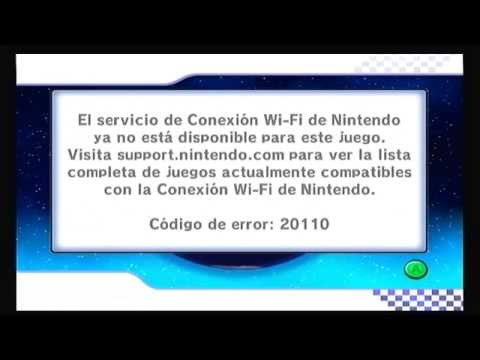

Rip conexión wifi nintendo
Hace un tiempo de nintendo shutdown la conexión wifi de nintendo!
Ahora todos los juegos muestran esto cuando intentas acceder a la conexión wifi de nintendo en el juego.

Este fue un pequeño sitio web que hice. Los veré después chicos. ¡ADIÓS!